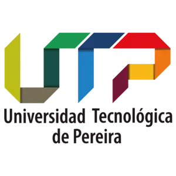

Universidad Tecnológica de Pereira.
Ingeniería Física · Undergraduate Engineering Physics programme

My foundation in physics, mathematics and engineering began at Universidad Tecnológica de Pereira (UTP), Colombia. I subsequently continued my engineering education in France through a double-degree pathway with IMT Mines Albi.
Physics foundations. Engineering perspective.
The undergraduate curriculum brings together theoretical and experimental physics, mathematical modelling, electronics, measurement methods and materials science. This background provided the scientific foundation for my subsequent training in instrumentation and advanced materials at IMT Mines Albi.
Mathematics & Numerical Methods
Calculus, differential equations, numerical methods and scientific computing.
Fundamental & Modern Physics
Classical mechanics, electromagnetism, thermodynamics, quantum physics and solid-state physics.
Electronics & Instrumentation
Analog and digital electronics, sensors, transducers and experimental measurement.
Optics & Materials Science
Physical optics, materials properties and experimental characterization.
Signals & Data Analysis
Signal processing, filtering and quantitative analysis of measurements.
Early exposure to materials research.
I participated in an undergraduate research group exploring transition-metal dichalcogenide thin films, including WS₂ and MoS₂. This was a period of research training and participation, not a completed or defended undergraduate thesis.
The experience introduced me to thin-film deposition concepts, materials characterization and exploratory laboratory activities, and helped develop my interest in experimental materials science.
The double-degree arrangement enabled me to continue at IMT Mines Albi in the second year of its French engineering programme. The two institutions are part of one connected academic journey, rather than unrelated qualifications.
Explore my IMT Mines Albi education ↗Academic certificates and individual records can be provided upon request where appropriate.